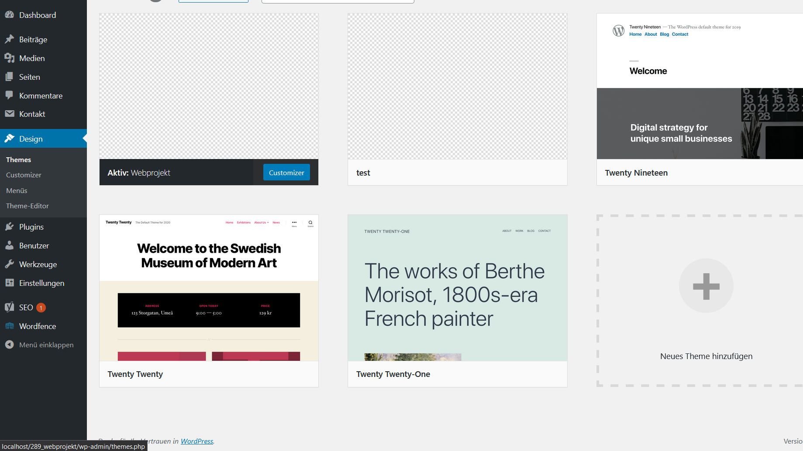
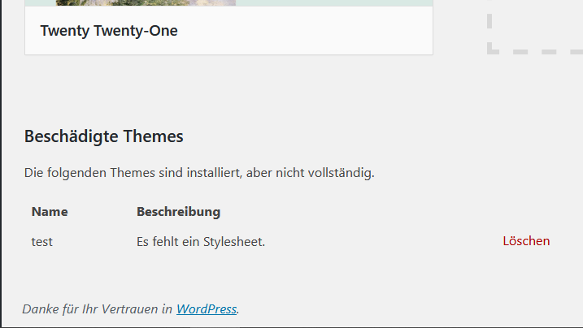
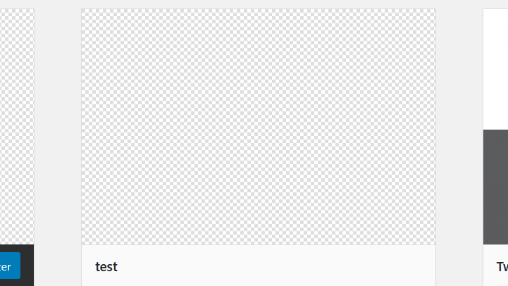
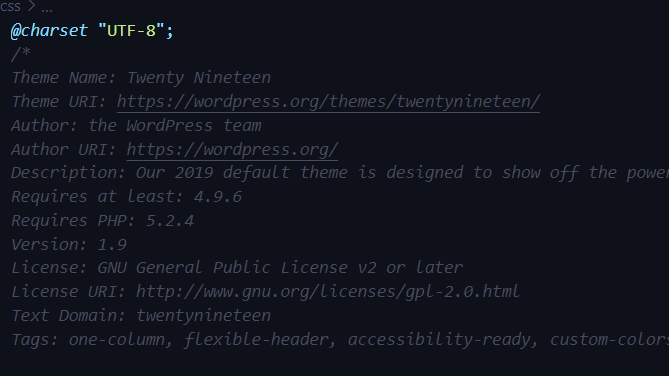
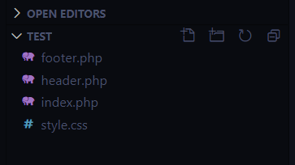
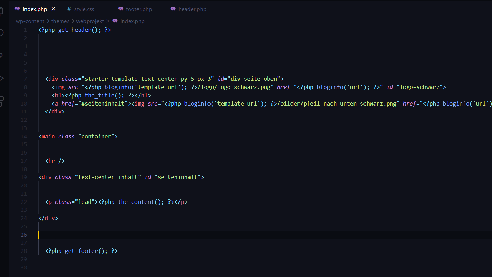

Design Regeln
Layout Elemente
- Typografie = serifenlos
- Farben = stimmig
- Bilder/Videos = sinnvoll und emotional
- Flächen = Unterteilung/Ordnung
- Formularelemente = selbsterklärend
C.R.A.P.
- Contrast:Kontrast
- Gewisse Elemente sollen herausstechen
- Repetition:Wiederholung
- Hilft dem Benutzer sich zurecht zu finden und sorgt für einen Wiedererkennungseffekt
- Alignment:Anordnung
- Elemente welche dicht beieinanderstehen werden als zusammengehörig empfunden, bezieht sich auf alle Elemente
- Proximity:Nähe
- Ähnliche/Zusammengehörende Texte/Bilder werden nahe aneinander platziert, um zu zeigen, dass sie zusammengehören


Adobe XD
Ebenen, Assets und Plugins
Ganz links kann man zwischen Assets, Ebenen und Plugins auswählen. Plugins kann man über die Integrierte Suche in XD suchen. Dokument-Assets ist eine Sehr hilfreiche Funktion um Wiederkommende Elemente zu speichern. Um etwas hinzuzufügen muss man es markieren und dann auf das Kleine + klicken. Im Ebenen Tab kann man Formen und Gruppen sortieren, umbenennen und verwalten.
Tools und Prototyping
Die Tools von Oben nach unten sind Auswahl, Rechteck, Ellipse, Polygon, Linie, Zeichenstift, Text, Zeichenfläche und Zoom. Im Bearbeitungsstab gibt es verschiedene Möglichkeiten, um eine Form zu bearbeiten. Im Prototype Tab kann man Formen mit einander verlinken um eine nutzbare Version des Screendesign zu erstellen.
Entwicklungsumgebung
Bei der Entwicklungsumgebung gibt es nicht viel Spezielles oder je nach Benutzer Unterschiedliches.
Man braucht:
- Einen Code-Editor
- Verschiedene Browser
- Xampp (für Localhost)
- FileZilla
- Adobe XD (optional)
Code Editor:
Für das Bearbeiten von PHP / CSS, damit die Website gut aussieht und funktioniert. Wir haben immer Visual Studio Code von Microsoft benutzt. Es funktioniert sehr simpel.
Verschiedene Browser:
Weil jeder Browser Dinge anders darstellt, braucht man verschiedene Browser, damit man das optimale Ergebnis für jeden Browser erreicht.
Xampp:
Mit Apache und MYSQL, damit man nicht immer auf den Webhoster hochladen muss.
FileZilla
Hilfsprogramm, das per FTP-Verbindung die Dateien auf das Webhosting hochlädt.
Adobe XD:
Hilfsprogramm, um das visuelle Screendesign zu machen. Dient später als Vorlage, wenn man das CSS-File bearbeitet.
Wordpress


Installation
Bevor die richtige Installation beginnt müssen die WordPress-Files von wordpress.org heruntergeladen werden und in den entsprechenden Website-Ordner, in welchem WordPress installiert werden sollte eingefügt werden. Auf localhost unter phpmyadmin muss nun eine Datenbank erstellt werden.
Navigiert man nun über localhost auf den Ordner, in welchem WordPress installiert werden soll, beginnt die Installation. Klick auf den Installations-Button und fülle im nächsten Schritt die Datenbank-Angaben aus. Als Datenbankname verwendest du denselben wie bei phpmyadmin. Der Standard Benutzername ist root und das Passwort leer. Den Tabellen-Präfix sollte man ändern, aus Sicherheitsgründen.
Im nächsten Schritt erstellst du deinen eigenen WordPress Benutzer/Admin. Das Passwort sollte gut gewählt sein und merk dir die Anmeldedaten gut. Zu Beginn macht es Sinn einen Haken beim Punkt der Suchmaschine zu setzen.
Themes (PHP)
Wordpress Theme erstelles
Wordpress stellt unter anderem sogenannte Themes zur Verfügung. Diese sind im Backend unter dem Menüpunkt ‘Designs’ >> ‘Themes’ zu finden und die Dateien dazu im Wordpress Ordner ‘wp-content’ >> ‘themes’. Wenn man ein eigenes Theme erstellen möchte, kann man also einfach einen neuen Order im Ordner ‘themes’ anlegen.

Auf den zweiten Blick ist es aber doch nicht ganz so einfach. Es wird sogar eine Fehlermeldung ausgegeben, die besagt, dass ein Stylesheet fehlt. Tatsächlich fehlt mehr als nur das Stylesheet, das kann man ganz leicht erkennen, in dem man einen anderen Themeordner öffnet, deshalb werden im Ordner des neuen Themes zunächst einmal folgende Files erstellt: style.css und index.php.

Das Ganze sollte nun so aussehen. Klickt man jedoch auf ein anderes Theme, werden Details aufgeführt, was beim neu erstellten Theme nicht der Fall ist. Wenn man nun die CSS files der vorgefertigten Themes öffnet, sind im oberen Teil viele Kommentare zu finden.

Der oberste Teil kann rauskopiert und in das eigene style.css eingefügt werden. Dabei ist nur der abgebildete Bereich notwendig. Die eigenen Informationen können eingetragen werden. Diese werden dann bei dem eigenen Theme angezeigt.
Wordpress Theme einrichten
Das Theme ist erstellt und einsatzbereit. Mehr oder weniger zumindest, denn es fehlt noch alles Mögliche an Inhalt, Header und Footer.
Bei der Arbeit mit Wordpress ist es empfehlenswert, für den Header und den Footer ein jeweils eigenes File zu erstellen. Dies hat den einfachen Grund, dass Header und Footer, vor allem der Footer, eigentlich immer gleich bleiben. Ausserdem ist es übersichtlicher, da nicht alles in ein einziges File gecoded ist.

In das File header.php kommt der gesamte obere Teil des HTML Gerüstes, also alles von <!doctype html> bis und mit </header>. In das File footer.php kommt der gesamte untere Teil, von </main> bis und mit </html>, bis sich im File index.php nichts Weiteres als abgebildet befindet.
Der vorhergehenden Grafik sind schon die nötigen Massnahmen zu entnehmen, die es benötigt, um es wieder zu ‘einem einzigen, grossen’ zu machen. An dieser Stelle kommt die Skriptsprache PHP ins Spiel. An der Stelle, an der sich normalerweise der Header oder der Footer befinden würden, werden nun die entsprechenden PHP-Befehle eingefügt; <?php get_header(); ?> oder entsprechend <?php get_footer(); ?>. Damit der Browser auch erkennt, welches File was ist, werden die betroffenen Files entsprechend mit <?php wp_head ?> oder <?php wp_footer ?> gekennzeichnet.
PHP
Das Einsetzen von PHP ist beim Arbeiten mit CMS unumgänglich, vor allem wenn es eine dynamische Seite sein sollte. Mittels PHP können Inhalte jederzeit im Backend von Wordpress verändert, gelöscht oder hinzugefügt werden.
PHP ist eine Skriptsprache, die etwas im Hintergrund ausführt, diese Sprache ist demnach Serverseitig.
Um PHP nun zu verwenden, kann es direkt im Code verwendet werden oder von einem externen Ort eingebunden werden. Je nach dem ergibt das Eine oder Andere mehr Sinn. Damit erkannt wird, wann PHP angewendet wird, werden die PHP-Tags benötigt. Jeder PHP-Befehl muss sich innerhalb der Tags: <?php und ?> befinden. Innerhalb dieser Tags folgt nun der Befehl, bzw. die Funktion. Die meisten PHP – Funktionen werden folgendermassen aufgebaut: funktion();. Dabei wird ‘funktion’ durch die entsprechende Funktion ersetzt, in den Klammern folgt ein Wert. Diese Werte werden immer in Hochkommas gesetzt. Zum Schluss folgt ein Semikolon. Dieses Semikolon ist unerlässlich, da sonst eine Fehlermeldung ausgegeben wird. Für unseren Zweck ist es nicht notwendig, PHP vollständig zu verstehen oder zu beherrschen, aber es ist sicherlich von Vorteil, wenn eine gewisse Grundkenntnis vorhanden ist.
Wenn jetzt an einer bestimmten Stelle im Code nun ein dynamischer Inhalt eingefügt werden soll, kann an genau dieser Stelle ein PHP-Skript eingefügt werden. Je nach gewünschtem Inhalt gibt es auch entsprechende Funktionen. Im Anschluss werden die meistgebrauchten Funktionen kurz aufgeführt und erklärt:
- <?php the_title(); ?> : Fügt an dieser Stelle den dynamischen Seitentitel ein
- <?php the_content(); ?> : Fügt an dieser Stelle den dynamischen Seiteninhalt ein
- <?php get_header(); ?> : Verknüpft das Index.php File mit dem header.php File
- <?php get_footer(); ?> : Verknüpft das Index.php File mit dem footer.php File
- <?php bloginfo(‘url’); ?> : Zeigt die unter "Einstellungen"> "Allgemein" festgelegte "Site-Adresse (URL)" an.
- <?php bloginfo(‘template_url’); ?> : URL des Verzeichnisses für das Entsprechende Element
- <?php bloginfo(‘name’); ?> : Zeigt den unter "Einstellungen"> "Allgemein" festgelegten "Site-Titel" an.
- <?php wp_head(); ?> : Kennzeichnet das entsprechende File als Header
- <?php wp_footer(); ?> : Kennzeichnet das entsprechende File als Footer
- <?php wp_nav_menu ($menu_settings) ; ?> Variable deklarieren für dynamisches Menü
- <?php register_nav_menu(‘primary’,’Hauptnavigation’); ?> : Dynamischem Menü Namen vergeben
- <?php $menu_settings = array(); ?> Deklarierte Variable definieren